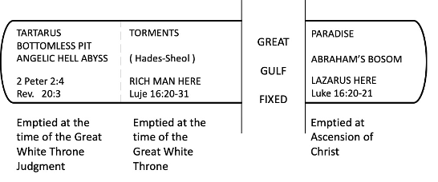

Austin Bible Church
The overall designation for the place of all departed souls (believers and unbelievers) in the Old Testament is שׁאול (she'ôl). Sheol is the Hebrew word for the lower parts of the earth and is translated “hell.” Hades ᾅδης (hadēs) is the Greek word for the lower parts of the earth and is also translated “hell.”
Hell’s Compartments
In the Old Testament, Sheol (hell) was made up of three compartments: Tartarus, Torments, and Paradise. Tartarus is that compartment of hell where the bound fallen angels are located. 2 Peter 2:4.
"For if God did not spare angels when they sinned, but cast them into hell and committed them to pits of darkness, reserved for judgment;" (2 Peter 2:4, NASB)
Torments is that compartment of hell where unbeliever’s souls are awaiting the Last Judgment or the Great White Throne Judgment. Luke 16:23; Rev. 20:11-15.
" "In Hades he lifted up his eyes, being in torment, and saw Abraham far away and Lazarus in his bosom. " (Luke 16:23, NASB)
"Then I saw a great white throne and Him who sat upon it, from whose presence earth and heaven fled away, and no place was found for them. And I saw the dead, the great and the small, standing before the throne, and books were opened; and another book was opened, which is the book of life; and the dead were judged from the things which were written in the books, according to their deeds. And the sea gave up the dead which were in it, and death and Hades gave up the dead which were in them; and they were judged, every one of them according to their deeds. Then death and Hades were thrown into the lake of fire. This is the second death, the lake of fire. And if anyone's name was not found written in the book of life, he was thrown into the lake of fire." (Revelation 20:11-15, NASB)
Before the ascension of Jesus Christ, Paradise was located in hell. A great gulf existed between Torments and Paradise.

Paradise is now empty. Jesus Christ transferred all Old Testament believers to the third heaven in a Triumphal Procession after His resurrection and ascension where His perfect humanity was accepted by God the Father and seated in the Throne Room at the Father’s right hand – the place of honor. 2 Cor. 12:1-4.
"Boasting is necessary, though it is not profitable; but I will go on to visions and revelations of the Lord. I know a man in Christ who fourteen years ago—whether in the body I do not know, or out of the body I do not know, God knows—such a man was caught up to the third heaven. And I know how such a man—whether in the body or apart from the body I do not know, God knows— was caught up into Paradise and heard inexpressible words, which a man is not permitted to speak." (2 Corinthians 12:1-4, NASB)
The transfer took place when Jesus ascended to the Third Heaven. In Ephesians 4:8-10, “a host of captives” were just soul and spirit (no body) of the Old Testament believers. Today, they are still soul and spirit as they have no resurrection body yet.
"Therefore it says, "WHEN HE ASCENDED ON HIGH, HE LED CAPTIVE A HOST OF CAPTIVES, AND HE GAVE GIFTS TO MEN." (Now this expression, "He ascended," what does it mean except that He also had descended into the lower parts of the earth? He who descended is Himself also He who ascended far above all the heavens, so that He might fill all things.)" (Ephesians 4:8-10, NASB)
In the pre-ascension days (Old Testament), the rich man in Torments (in Hades) saw Abraham and Lazarus who were believers and in Paradise which was afar off, but still in Hades. Unbelievers will be brought from Torments to face the Last Judgement (Great White Throne) where they will be judged according to their works and cast into the Lake of Fire also known as Hell, Tophet, and Gehenna. They may have a body which can burn forever. Luke 16; John 5:29; Matt. 10:28.
" and will come forth; those who did the good deeds to a resurrection of life, those who committed the evil deeds to a resurrection of judgment. " (John 5:29, NASB)
" "Do not fear those who kill the body but are unable to kill the soul; but rather fear Him who is able to destroy both soul and body in hell. " (Matthew 10:28, NASB)
No Degrees of Punishment
The Lake of Fire will be a literal place with literal fire and real brimstone. Rev. 14:10-11; Rev. 19:20; Rev. 20:10; Rev. 21:8.
"he also will drink of the wine of the wrath of God, which is mixed in full strength in the cup of His anger; and he will be tormented with fire and brimstone in the presence of the holy angels and in the presence of the Lamb. "And the smoke of their torment goes up forever and ever; they have no rest day and night, those who worship the beast and his image, and whoever receives the mark of his name."" (Revelation 14:10-11, NASB)
"And the beast was seized, and with him the false prophet who performed the signs in his presence, by which he deceived those who had received the mark of the beast and those who worshiped his image; these two were thrown alive into the lake of fire which burns with brimstone." (Revelation 19:20, NASB)
"And the devil who deceived them was thrown into the lake of fire and brimstone, where the beast and the false prophet are also; and they will be tormented day and night forever and ever." (Revelation 20:10, NASB)
""But for the cowardly and unbelieving and abominable and murderers and immoral persons and sorcerers and idolaters and all liars, their part will be in the lake that burns with fire and brimstone, which is the second death."" (Revelation 21:8, NASB)
The false concept that there will be degrees of punishment in hell tends to destroy the literal Lake of Fire. It is not hotter in some places than in others. Matt. 25:41; Rev. 20:10; Rev. 20:14-15.
" "Then He will also say to those on His left, 'Depart from Me, accursed ones, into the eternal fire which has been prepared for the devil and his angels; " (Matthew 25:41, NASB)
"And the devil who deceived them was thrown into the lake of fire and brimstone, where the beast and the false prophet are also; and they will be tormented day and night forever and ever." (Revelation 20:10, NASB)
"Then death and Hades were thrown into the lake of fire. This is the second death, the lake of fire. And if anyone's name was not found written in the book of life, he was thrown into the lake of fire." (Revelation 20:14-15, NASB)
Degrees of punishment is contrary to the doctrine of Unlimited Atonement. Degrees of punishment destroy the true issue of salvation, that is rejection of Jesus Christ is the only reason that anyone will be sent to the Lake of Fire. Sin is not the issue where one rejector would receive less punishment than another. The issue is always that Christ died for everyone’s sins. This false theory is actually based on the Hegelian theory - that every thesis has an antithesis. If there is an antithesis in the context, it will be stated like in John 3:36.
""He who believes in the Son has eternal life; but he who does not obey the Son will not see life, but the wrath of God abides on him."" (John 3:36, NASB)
Thesis: It says there will not be sorrow in heaven. Antithesis: It says there will be sorrow in hell. Thesis: It says there will be rewards in heaven. Antithesis: None stated. It does not say there will be degrees of punishment in hell. It seems logical, but often human viewpoint does seem logical.
One can be dogmatic that there will be no degrees of punishment in hell on the basis of how sinful the unbeliever was on earth. The false possibility of degrees of punishment in hell is on the basis of accumulation of human good where the one who has the largest pile of human good gets the best place in hell. There is no Scripture for this either.